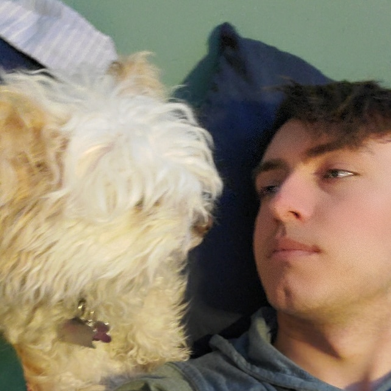
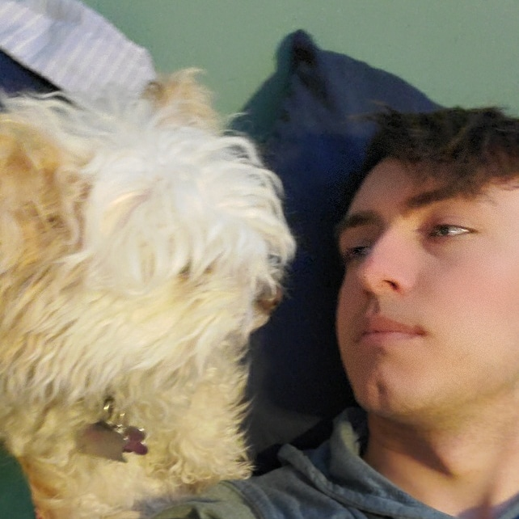

About Me
My name is Shaun Senow and I was born and raised in Manitoba. When I was born, it was in St. Boniface hospital. I have no memory of it, which is most certainly a blessing. Heard that kind of stuff wouldn’t be the best to remember as a child. My stay there wasn’t very long and soon enough I was on my way to my home out in the Springfield area. Where I lived off and on for the next 18 years. If you didn’t know, the deer that are out there… not the most friendly of dudes, plus they can and will eat all of your flowers and whatever else you may have planted. My remainder of that time was spent living on a farm and then after a few more years eventually where I currently reside which is far south in the Hanover area with my Pomapoo Sasha (The Defender of Man).
The family life was just like any other family… well any life you can expect from having two separate families. We have divorce to thank for that one, shoutout to the marriage system. On my dad's side of things, everything was great and all. Things were more difficult to chase after what I was interested in. While I was growing up technology was a huge part of my upbringing but my father was never too set on it. He was more into hunting, cars and all that. But I was fortunate enough to have my mother fully on board with all the mysteries that hide within technology. Only issue that came with that was of course the fact that when she and my father separated, she ended up meeting my now step-father who happened to live on a farm. So technology and decent internet became more of a dream. But with all the obstacles laid out in front of us, I pushed on and made it here today to be able to write this out.
With everything previously mentioned, it made my goal in life a little bit more of a challenge to accomplish. That of course being my enrollment in a technology related course. Initially I planned on applying for the University of Manitoba. This was of course due to the pressure placed on me by my friends that were already students there. But there was one pushing factor that made my choice very simple for me to end up rolling with MITT. Their hands-on approach to things, mixed in with the internship that is offered at the end made things very easy for me. When it comes to things like technology I am forever fascinated by how the possibilities really seem endless. If you take a look at the past 100 years and see how far we have come along, who knows how wild things will get in the next 100. That’s what I enjoy the most about this field… the amazing things that are possible thanks to Virtual reality and Augmented reality also help with my unhealthy fascination. One day we may just get to the point where the world is overrun by the robots as you see in the movie so hopefully I can do a good enough job in the field that they may just spare me.
 
